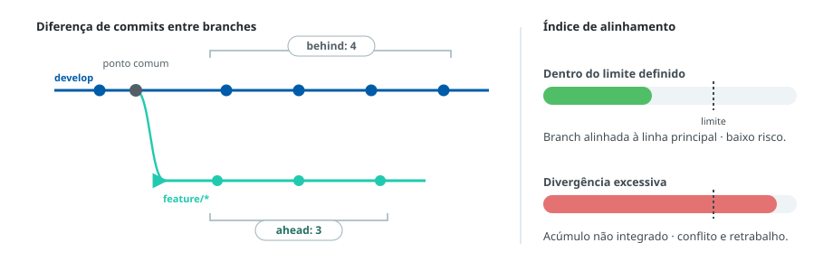

As branches protegidas devem apresentar baixo índice de divergência em relação às temporárias
A diferença de commits ahead/behind entre branches permanentes
(develop e/ou main) e branches temporárias deve
ser monitorada continuamente e mantida dentro dos limites definidos, evitando o acúmulo
de mudanças não integradas.
Por que controlar a divergência
Quando a diferença de commits cresce, aumentam o risco de conflitos e o retrabalho. Por isso, as branches temporárias devem ser alinhadas regularmente com a linha principal, garantindo integração contínua e histórico consistente.

Regras de alinhamento por tipo de branch
| Branch | Regra de alinhamento (obrigatória) |
|---|---|
| feature/* | Deve ser sincronizada com frequência com a develop, sem longos períodos de isolamento. |
| release/* | Deve refletir o estado mais atualizado da develop e, após a conclusão, deve ser integrada na main e na develop, prevenindo commits órfãos. |
| hotfix/* | Deve ser utilizada exclusivamente em incidentes. Após a correção, deve ser integrada na main e na develop. |
Diferenças excessivas de commits entre branches caracterizam baixa maturidade. As branches
devem ser mantidas dentro do limite definido pela governança técnica:
[definir limite institucional — ex.: X commits ou Y dias sem sincronização].
As referências metodológicas sobre este assunto devem ser incluídas aqui. (espaço reservado para os links institucionais.)